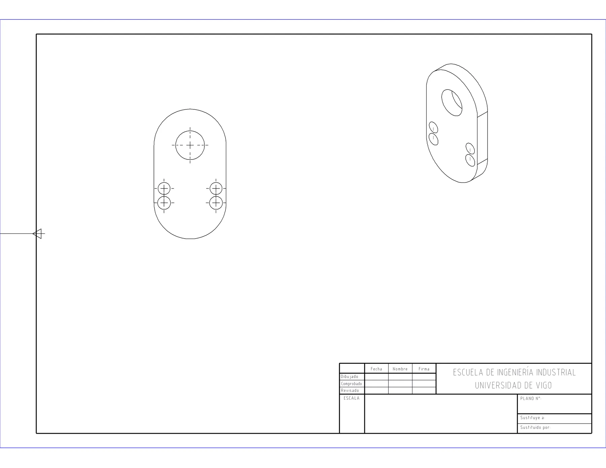
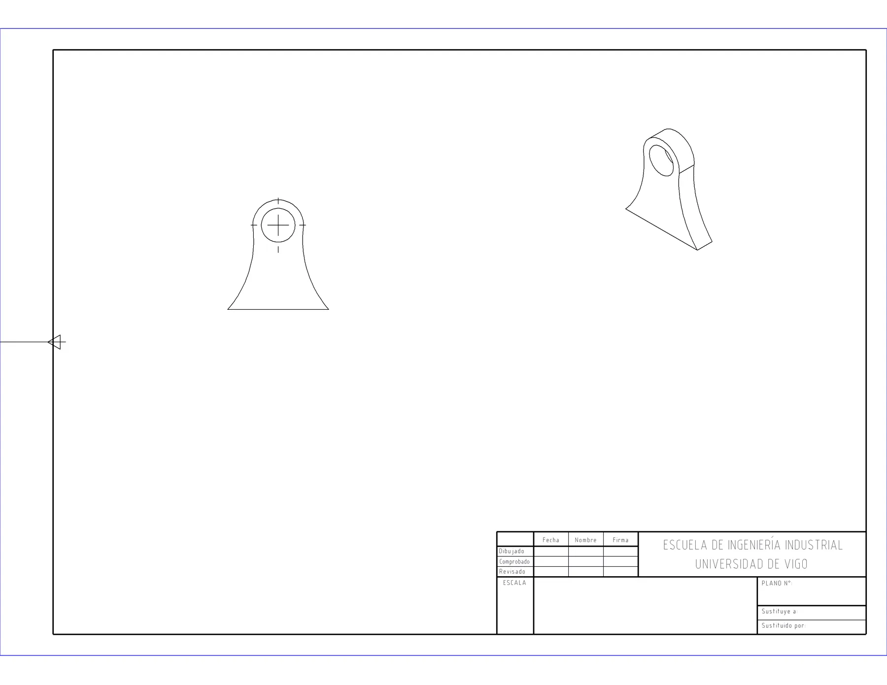

Case 03 · Personal project in progress
Generating the manufacturing drawing from the 3D model without letting the AI touch the geometry
A Python engine that takes a SolidWorks part and creates its 2D drawing through the program's API. It is the foundation for an AI assistant.
8/8test-bench parts with a generated drawing
3 viewsfront, isometric and optional section, with centre marks
ISO 273the standard lives in a data file, separate from the code
- Type
- Personal learning and portfolio project, started in July 2026
- Status
- Phase 0 closed. Phase 1 in progress: the engine already generates drawings with views for all 8 test-bench parts. Dimensioning and the AI layer are the next phases
- Authorship
- My own. Developed with AI agents (Claude Code and Codex) under my specification and verification
The problem
Going from a 3D model to a manufacturing drawing is repetitive design-office work: placing views, choosing the scale, dimensioning, filling in the title block and exporting. If a language model is asked to do it by moving the geometry, the result is neither reliable nor repeatable.
What I did
- Before writing any code, I extracted the drafting criteria from real drawings and chose the test bench by measuring the parts, not by their names.
- Directing Codex and Claude, I built a Python engine that drives SolidWorks through its COM API: it creates the drawing on a fixed A3 layout, places the front view at a preferred 1:1 scale and the isometric view at its own scale with centre marks, without overlapping the title block, and exports it to PDF.
- The ISO 273 clearance holes live in a data file, not scattered through the code.
- For the AI layer I set one rule: the AI will only translate the intent into JSON with a closed schema, the engine will execute it, and the verification signals (rebuild, readable errors, standards check) will go back to the AI so it can correct itself. The AI will never make direct calls to the geometry.
What went wrong and how I fixed it
- Views spilled out of the frame on the left margin. I corrected the calculation of the usable area.
- Isometric views came out too small because their size was estimated as if they were square. I corrected the estimate.
- Hole detection failed with a
DISP_E_MEMBERNOTFOUNDerror from the COM API. The cause was found and fixed. - The section view does not suit every part, so it became optional (
--con-seccion) instead of being on by default.
Current result
This is what a drawing from the engine looks like today, with no manual intervention. It does not yet have dimensions or a filled-in title block: that is the starting point of the next phase.


Limitations and next step
- Still missing: automatic dimensioning, filling in the title block, the bill of materials and DXF export.
- Next step: dimension according to the standard and then drive the engine in natural language through MCP.
Tools
- Python
- SolidWorks API (COM)
- pywin32
- Claude Code
- Codex
- ISO 273